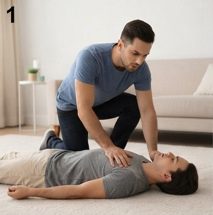
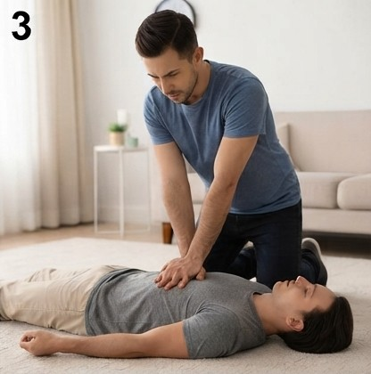

Certifique-se de que o ambiente está seguro para você e para a vítima (atenção a trânsito, fios elétricos, fogo ou objetos perigosos).
Toque nos ombros da pessoa e chame-a em voz alta. Observe por no máximo 10 segundos se há resposta e se ela respira normalmente (respiração agônica ou "gasping" — suspiros espaçados e ofegantes — não é respiração normal e indica parada cardiorrespiratória).

Se a vítima não responder e não respirar normalmente, ligue imediatamente para o SAMU 192 (ou Bombeiros 193) e coloque o celular no viva-voz.
Se houver outra pessoa por perto, aponte para ela e peça que ligue para o socorro e busque um DEA (Desfibrilador Externo Automático).
Deite a vítima de barriga para cima em uma superfície rígida e plana (como o chão). Ajoelhe-se ao lado do tórax dela.
Posicione a base de uma das mãos no centro do tórax (sobre a metade inferior do osso esterno, entre os mamilos) e coloque a outra mão por cima, entrelaçando os dedos e mantendo os braços esticados.

Comprima forte e rápido usando o peso do corpo: profundidade de 5 a 6 cm, em um ritmo de 100 a 120 compressões por minuto. Permita o retorno total do tórax a cada compressão, sem retirar as mãos do peito.
Não atrase o início das compressões tentando procurar pulso se você não for profissional de saúde — a ausência de resposta e de respiração normal já basta para iniciar a RCP.
Não coloque travesseiros sob a cabeça da vítima e não ofereça água, medicamentos ou alimentos.
Não encoste na vítima durante a análise ou disparo do choque pelo DEA.